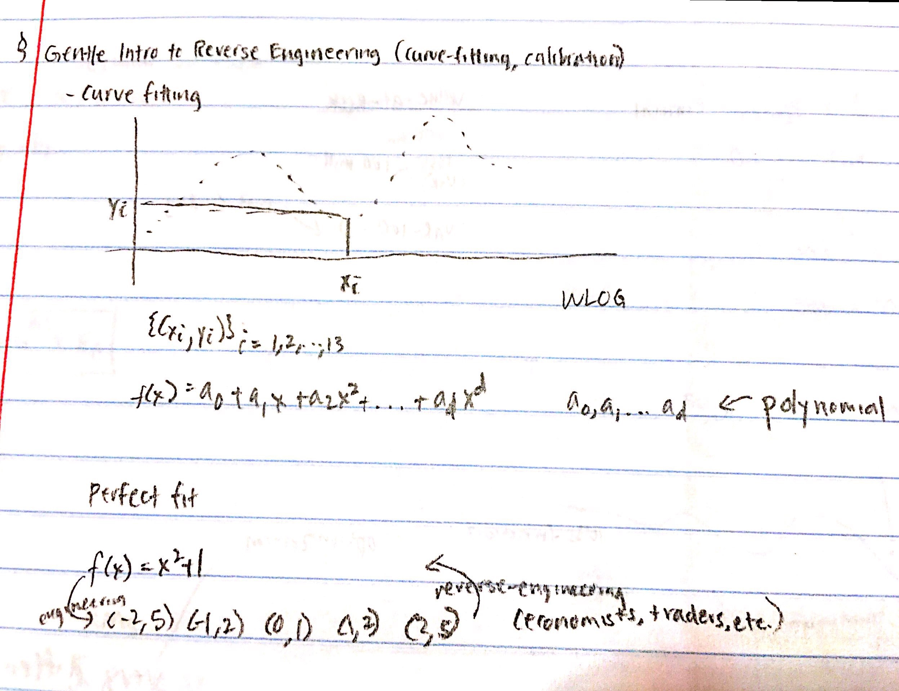

Recap of Lecture 1
Here is a quick recap over what we went over before:
As a recap over Lecture One, we went over three major root-finding methods: Bisection, Newton-Raphson, and the Secant Method (as well as brute force). The latter two work for convex/concave functions. Normally, we assume function f refers to a concave function and function -f is a convex function.
Lecture 2
Taylor Expansion
Here, we add another root-finding method.
- Brute force
- Bisection method
- Newton-Raphson method
- Secant method
- Taylor expansion method
Here is an illustration of using the Taylor series. This is not necessary to know, but it is interesting.
Curve-fitting
The second main topic is curve-fitting. Curve-fitting is an important part of reverse-engineering and is our gentle introduction to the field.
Look over the illustration below.
Using specific xi, yi values, we can always find some sort of polynomial that "curve-fits" those points. Engineering is, put simply, using the function to define the datapoints. Reverse-engineering is using datapoints to figure out a possible function that fits it. This is important so as to understand any dataset, predict future datapoints, and see past datapoints.
Now, an important part of curve-fitting is figuring out how good your curve is (how well it fits the datapoints). Thus, we look over methods to measure the "goodness" of fit. These methods are called loss functions. The most famous of these is the root-mean-squared method (RMS).
If we replace the y-hat with the actual function (in this case, we assume it is a polynomial), we get this equation:

Here is one last quick note on curve fitting: an important consideration is calibration of the curve. For instance, if the curve "overfits" (this is a common problem in machine-learning and natural-language-processing).
Take a look at Professor Hirsa's notes in a pdf: Lecture 2 Notes